Справочник по Git и GitHub · модуль 2 · первый репозиторий в VS Code
Глава 2.1
Панель Source Control:
первый коммит шаг за шагом
Глава построена как одно занятие за компьютером. Пустая папка, восемь действий подряд — и в проекте появляется первая сохранённая версия. После каждого действия показан кадр экрана: что именно изменилось в панели и почему. Все кадры сняты на этом самом проекте, посторонних файлов в них нет.
- Категория
- Рабочее место
- Уровень
- Начальный
- Что получится
- Проект с двумя коммитами и понимание, из чего состоит панель
- Сколько занимает
- Около двадцати минут за компьютером
§1Что показывает панель и зачем она нужна
Редактор показывает файлы такими, какие они сейчас. Вопросы «что я изменил за сегодня», «какие файлы готовы к сохранению» и «что уйдёт в историю по кнопке Commit» из обычного списка файлов не видны. На них отвечает панель Source Control — вкладка VS Code, которая всё время сравнивает папку проекта с последним сохранённым состоянием и показывает разницу.
Зачем это нужно в работе
- Перед сохранением видно, что именно уходит в историю. Панель показывает список изменённых файлов до нажатия кнопки, поэтому случайно закоммитить черновик или чужой файл сложнее.
- Не нужно помнить, что вы трогали. После дня работы список изменений собран за вас — по нему же пишется пояснение к коммиту.
- Ошибка видна сразу. Если в списке лежит файл, которого там быть не должно — пароль, ключ, гигабайтный архив, — это заметно до отправки, а не после.
Установленный Git и VS Code — это глава 1.3. Проверка: в терминале git --version печатает номер версии. Проект в этой главе называется proba-git и состоит из одного файла, так что заводить его можно рядом с учебными работами.
§2Шаг 1. Открыть папку проекта
Что делаем. Создаём пустую папку proba-git там, где держим учебные работы. В VS Code: File → Open Folder, выбрать её, Open. Затем открываем панель Source Control — значком с развилкой на левой полосе или сочетанием CtrlCmd + Shift + G.

Две кнопки делают разное. Initialize Repository заводит историю на вашем компьютере. Publish to GitHub делает то же самое и сразу создаёт копию проекта на сайте. Сейчас нажимаем первую: публикацией займёмся в модуле 4, когда будет что показывать.
Если нажать Initialize Repository в папке Documents или в домашней папке пользователя, Git начнёт отслеживать все ваши файлы разом — тысячи документов, загрузок и настроек. Открывайте папку конкретного проекта.
§3Шаг 2. Нажать Initialize Repository
Что делаем. Нажимаем синюю кнопку Initialize Repository. Это единственное действие шага, подтверждать ничего не нужно.
Что происходит. На диске появляется скрытая папка .git — в ней Git будет хранить историю проекта. Панель сразу меняет вид:

Одновременно внизу окна, в строке состояния, появляется имя ветки:
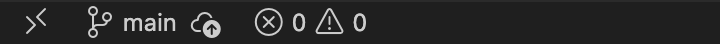
Имя main Git подставил сам: так называется основная ветка нового репозитория. Пока веток одна, об этом можно не думать — в модуле 3 разберём, зачем их бывает несколько.
§4Шаг 3. Создать первый файл
Что делаем. Переходим в проводник VS Code (CtrlCmd + Shift + E), нажимаем значок нового файла, называем его privet.html и пишем одну строку:
<h1>Привет, это моя страница</h1>
Сохраняем файл (CtrlCmd + S) и возвращаемся в панель Source Control. Что изменилось: пустая панель наполнилась.
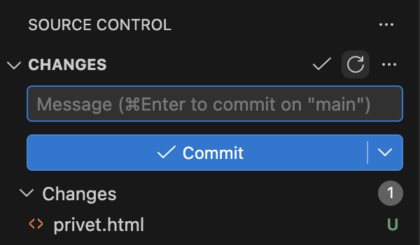
На левой полосе на значке Source Control появился синий кружок с той же единицей:
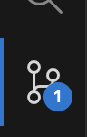
И в строке состояния у имени ветки появилась звёздочка — признак того, что в папке есть несохранённые в историю изменения:
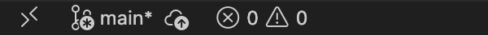
main* — в папке что-то изменилось с последнего коммита.§5Шаг 4. Посмотреть, что изменилось
Что делаем. Нажимаем на имя файла privet.html в списке Changes — на само имя, а не на значки справа от него. Панель остаётся на месте, а в правой половине окна, там, где обычно лежит текст файла, открывается вкладка.
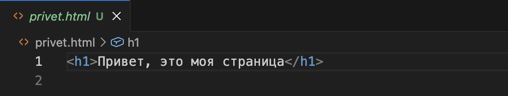
privet.html, рядом с именем — та же буква U, что и в списке. Ниже строка, которую вы написали.Почему здесь нет подсветки. Файл новый: прошлой версии не существует, сравнивать не с чем. Поэтому Git показывает его целиком, как есть.
Зачем этот шаг. Он проверочный. Перед тем как отправить работу в историю, на неё смотрят глазами: тот ли это файл, нет ли в нём лишнего — пароля, случайной строки, куска чужого текста. Ошибку так видно до коммита, а не после.
У файла, который уже есть в истории, по тому же клику открывается не текст, а окно сравнения: две колонки, слева прошлая версия, справа текущая, изменённые строки подсвечены. Так будет на шаге 8 — там разберём, как его читать.
§6Шаг 5. Подготовить файл к коммиту
Что делаем. Наводим указатель на строку файла в списке — не нажимаем, просто держим курсор над ней. Справа от имени появляются три значка. Они относятся только к той строке, на которой стоит курсор: у каждого файла свои.
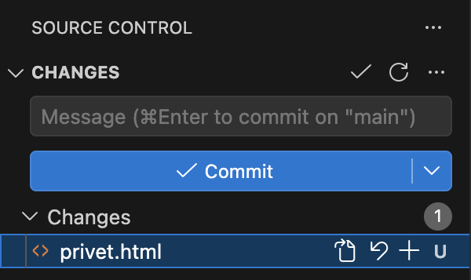
privet.html под курсором. Три значка слева направо, за ними буква состояния U.Что делает каждый из трёх:
| Значок | Подсказка при наведении | Что делает |
|---|---|---|
| Листок со стрелкой | Open File | Открывает файл в редакторе как обычно. Ничего не меняет |
| Круговая стрелка | Discard Changes | Возвращает файл к состоянию последнего коммита: ваши правки стираются |
| Плюс | Stage Changes | Отбирает файл для следующего коммита — это нам сейчас и нужно |
Круговая стрелка — Discard Changes из второй строки таблицы — удаляет правки без корзины: Git их не сохранял, восстанавливать нечего. У нового файла с буквой U она удалит и сам файл с диска. Нажимают её осознанно, когда правки точно не нужны, а не чтобы «убрать файл из списка».
Нажимаем плюс. Файл переезжает в новый раздел:
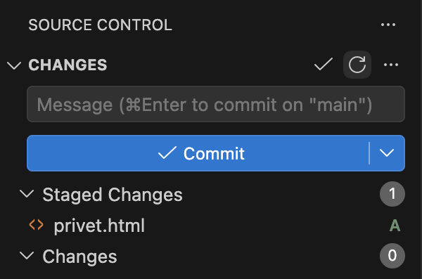
Это и есть главное различие в панели, ради которого сделаны два списка:
- Changes — всё, что изменилось в папке. В коммит это не попадёт.
- Staged Changes — то, что вы отобрали для следующего коммита. Попадёт именно это.
Передумали — наведите на файл в Staged Changes и нажмите − (Unstage Changes): он вернётся обратно. Подготовку можно отменять сколько угодно раз, история от этого не меняется.
Путь одного файла
Сохранение файла в редакторе (CtrlCmd + S) — это шаг 1, а не коммит. Пока не пройдены шаги 3 и 4, вернуться к этой версии нельзя.
Ассоциация: посылка на почте
Вещи лежат дома — это ещё не отправление. Вы складываете в коробку то, что решили отправить, заклеиваете её и подписываете, что внутри. Всё остальное остаётся дома до следующего раза.
Changes — вещи дома. Плюс у файла кладёт его в коробку (Staged Changes). Поле Message — подпись на коробке. Кнопка Commit заклеивает её: содержимое зафиксировано.
Где не совпадаетКоробка уезжает, а файл остаётся на месте и его можно править дальше. Коммит забирает не сам файл, а его состояние на этот момент.
§7Шаг 6. Написать пояснение
Что делаем. Щёлкаем в поле Message над кнопкой и пишем, что сделано. Не «правки» и не «коммит», а по существу — одной строкой, как заголовок:
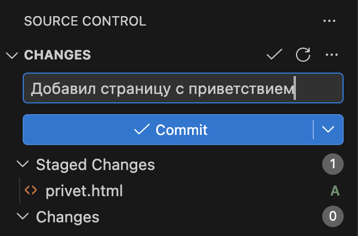
Без пояснения коммит не создастся: VS Code откроет отдельную вкладку COMMIT_EDITMSG и попросит его ввести. Это не придирка редактора — текст хранится внутри коммита и отвечает на вопрос «зачем это изменение».
§8Шаг 7. Сделать коммит
Что делаем. Нажимаем ✓ Commit. Это то самое сохранение версии, ради которого делались предыдущие шаги.
Что изменилось. Панель опустела:
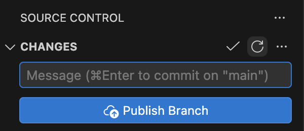
Вместо списка файлов появилась синяя кнопка Publish Branch — предложение выложить проект на GitHub. Нажимать её сейчас не нужно: публикация разбирается в модуле 4, а до тех пор проект спокойно живёт на вашем компьютере.
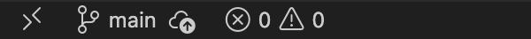
Первая версия проекта готова. Проверить это можно в терминале — Git покажет тот самый коммит:
ceabd0d Добавил страницу с приветствием
Слева короткое имя коммита, справа ваше пояснение. Набирать эту команду не обязательно — то же самое показывает раздел Graph под списками файлов, но в терминале видно короче.
§9Шаг 8. Изменить файл ещё раз
Что делаем. Открываем privet.html, дописываем вторую строку и сохраняем. Этот шаг нужен, чтобы увидеть разницу между новым файлом и уже знакомым Git файлом:
<h1>Привет, это моя страница</h1> <p>Учусь работать с Git.</p>
Нажмите на файл — теперь открывается окно сравнения, потому что есть с чем сравнивать:
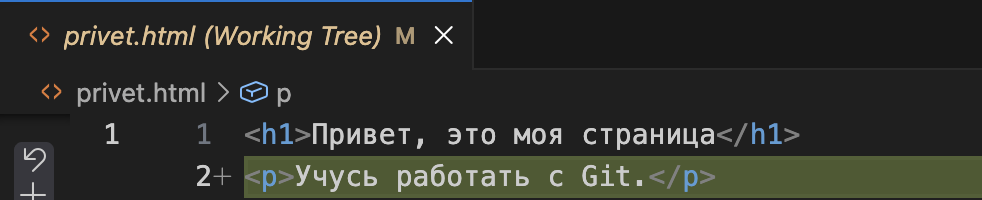
Повторите шаги 5–7 для этой правки: плюс, пояснение «Добавил строку про учёбу», Commit. В истории проекта станет два коммита — на этом сквозной сценарий закончен.
Что должно получиться
main без звёздочки.git log --oneline печатает две строки с вашими пояснениями.privet.html лежит в папке и содержит обе строки.§10Справка: буквы у имён файлов
Две буквы уже встретились по ходу работы — U у нового файла и M у изменённого. Всего их пять, и они цветные.
| Буква | Значит | Когда появляется |
|---|---|---|
| U — untracked | Новый файл, Git о нём ещё не знает | Создали файл в папке проекта |
| M — modified | Файл был в истории и изменён | Открыли и поправили существующий файл |
| D — deleted | Файл удалён из папки | Удалили файл, который был в прошлом коммите |
| A — added | Новый файл уже подготовлен к коммиту | Нажали плюс у файла с буквой U |
| R — renamed | Файл переименован | Сменили имя файла, содержимое осталось прежним |
Переименование Git замечает не сразу: сначала он видит два события — исчез старый файл (D) и появился новый (U). После коммита он сравнивает содержимое, понимает, что оно то же самое, и показывает это как переименование.
§11Справка: счётчик, строка состояния, меню
Синий кружок на значке Source Control — сколько файлов изменилось с последнего коммита. Ноль означает, что папка совпадает с историей.
Строка состояния внизу окна. Слева имя текущей ветки и значок обмена с сервером. Три состояния, которые встречаются чаще всего:
| Что видно | Что это значит |
|---|---|
main и значок облака | Всё сохранено в историю, копии на GitHub у проекта нет |
main* | В папке есть изменения, которых нет в истории: коммит не сделан |
main ⟳ 3↓ 2↑ | Проект связан с GitHub: два ваших коммита не отправлены, три чужих не забраны |
Третье состояние появится в модуле 4, когда проект окажется на сайте. Привычка смотреть на стрелки перед началом работы экономит разбирательства со слияниями: сначала забрать чужое, потом делать своё.
Меню с остальными командами спрятано под значком с тремя точками справа от слова CHANGES. Там собраны все команды Git, которые понадобятся дальше.

| Пункт меню | Что делает | В какой главе |
|---|---|---|
Pull, Push, Fetch | Обмен коммитами с копией на GitHub | Модуль 4 |
Clone | Скачать чужой репозиторий себе | Глава 2.2 |
Commit → Undo Last Commit | Отменить последний коммит, вернув файлы в подготовленные | Глава 2.6 |
Changes → Stage All | Подготовить все изменения разом | Глава 2.3 |
Branch | Создать, переключить, переименовать, удалить ветку | Модуль 3 |
Stash | Отложить незаконченные правки, не делая коммит | Глава 3.5 |
Запоминать эти пункты сейчас не нужно. Важно другое: если команда не нашлась среди кнопок, она в этом меню или в палитре команд (CtrlCmd + Shift + P) по слову git.
§12Частые вопросы
§13Проверьте себя
На значке Source Control стоит цифра 4. Что это означает?
Четыре файла в папке проекта отличаются от последнего коммита: изменены, созданы или удалены. Это не число коммитов и не количество файлов проекта — только то, что разошлось с историей.
Чем Changes отличается от Staged Changes?
Changes — всё, что изменилось в папке; в коммит это не войдёт. Staged Changes — то, что вы отобрали кнопкой с плюсом; именно это сохранится при нажатии Commit. Разделение позволяет положить в коммит часть правок, а остальные оставить на потом.
Рядом с файлом стоит буква U. Что это за файл и что с ним делать?
Файл новый: он лежит в папке, но в истории его ещё нет. Чтобы он попал в проект, нажмите плюс — буква сменится на A, файл окажется в Staged Changes, — и сделайте коммит. Если файл попал в папку случайно, его можно удалить или внести в .gitignore.
Почему при первом клике по новому файлу открылся сам файл, а не сравнение?
Сравнивать было не с чем: прошлой версии у нового файла не существует. Окно сравнения появляется у файла, который уже есть в истории, — как на шаге 8, где подсветилась добавленная строка.
Вы сделали коммит, но на GitHub изменений не видно. Почему?
Коммит сохраняется на вашем компьютере. Чтобы он оказался на сайте, нужна отправка: кнопка Sync Changes или пункт Push в меню. Пока проект не опубликован, в строке состояния стоит значок облака.
Что произойдёт, если нажать круговую стрелку у изменённого файла?
Файл вернётся к состоянию последнего коммита, а все правки после него исчезнут без возможности вернуть. Git их не сохранял, поэтому восстанавливать нечего. Если правки нужны, но мешают — их откладывают через Stash, а не отменяют.
§14Шпаргалка по главе
открыть папку
Initialize Repository
создать файл → плюс
пояснение → Commit
CtrlCmd+Shift+G
значок с развилкой слева
Changes — изменилось в папке
Staged Changes — войдёт в коммит
U — новый файл
M — изменён
D — удалён
A — подготовлен
плюс — подготовить
минус — вернуть из подготовленных
круговая стрелка — отменить правки
main — текущая ветка
main* — есть несохранённое
облако — проект не опубликован
Итог главы
Один проход по восьми шагам даёт всю рабочую схему: открыть папку, завести репозиторий, создать файл, посмотреть изменения, подготовить их плюсом, написать пояснение, нажать Commit. Панель показывает разницу между папкой проекта и последним коммитом: изменённые файлы попадают в Changes, отобранные — в Staged Changes, и в историю уходит только второй список. Буква справа от имени говорит, что случилось с файлом, счётчик на значке — сколько файлов разошлось с историей, строка состояния — на какой вы ветке и опубликован ли проект. В следующей главе разберём, откуда репозиторий берётся: свой заводят с нуля, чужой скачивают клонированием.
- Кадры сняты в Visual Studio Code на учебном проекте
proba-git, собранном специально для этой главы: в нём один файл и два коммита. - Назначение элементов панели и список команд меню — документация VS Code, раздел Source Control.
- Буквы состояний файлов соответствуют выводу
git status— документация Git.